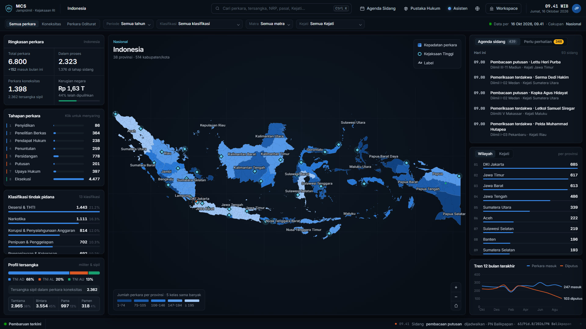
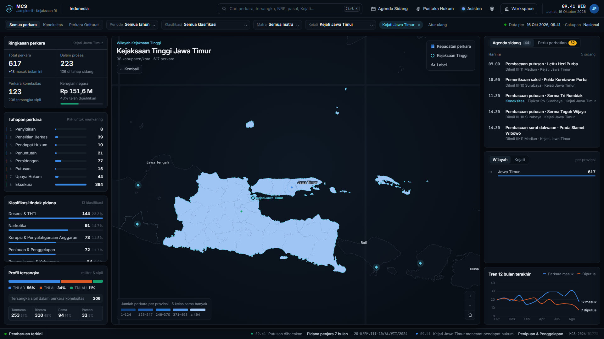
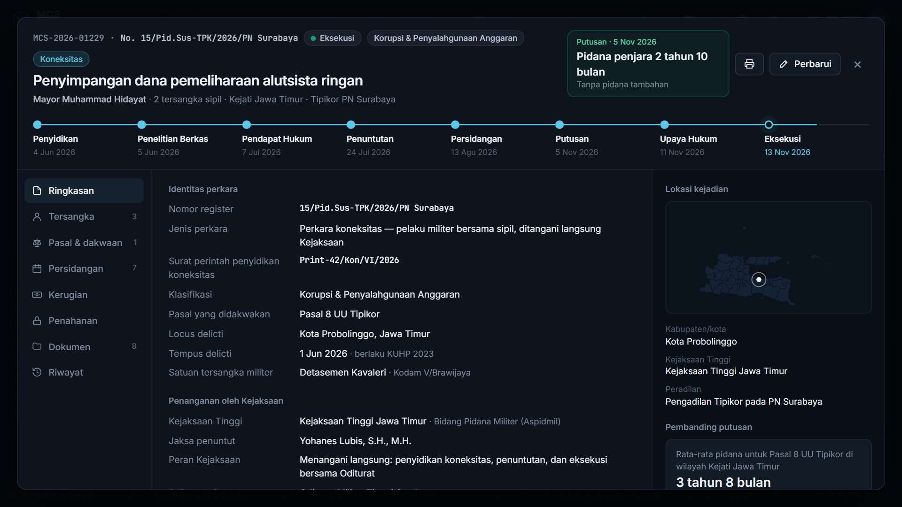
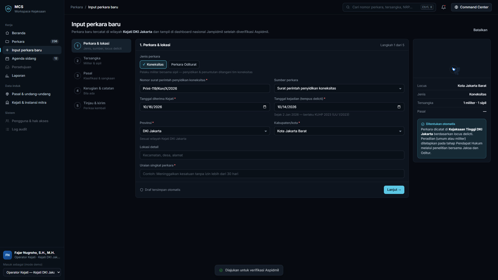

MCS adalah sistem untuk mencatat dan memantau seluruh perkara pidana militer secara nasional. Setiap Kejaksaan Negeri (Kejari) mengisi langsung, sehingga Jaksa Agung Muda Bidang Pidana Militer (Jampidmil) dapat melihat kondisi perkara kapan saja, tanpa menunggu rekap manual.
Pelakunya prajurit TNI bersama warga sipil. Kejaksaan menangani langsung, dari penyidikan sampai pelaksanaan putusan.
Pelakunya prajurit TNI, dituntut oleh Oditur (penuntut di peradilan militer). Kejaksaan mengkoordinasikan dan memantau.
Perpres No. 15 Tahun 2021 tentang Perubahan Kedua atas Perpres No. 38 Tahun 2010 tentang Organisasi dan Tata Kerja Kejaksaan RI
Pasal 25C huruf f memberi Jampidmil fungsi pemantauan, analisis, evaluasi, dan pelaporan atas perkara di seluruh Indonesia.
MCS menjalankan fungsi tersebut: satu data nasional yang diisi oleh Kejari dan dapat dipantau langsung oleh pimpinan.
Akses berbasis peran dan wilayah: Kejari hanya melihat perkara di wilayahnya.
Input perkara baru, memperbarui tahapan, sidang, kerugian, penahanan, dokumen.
Memverifikasi data dari operator, mengelola pengguna di wilayahnya, dan melakukan eksaminasi.
Memantau, menganalisis, memberi catatan eksaminasi.
Melihat dashboard, laporan, dan peringatan prioritas (hanya melihat, tidak mengubah data).
Mengelola data dasar (daftar Kejari, pasal), pengguna, pengaturan sistem, dan verifikasi akhir.
Membaca data dan log audit.
Disusun mengikuti lingkup tugas Jampidmil (Pasal 25B ayat 2 Perpres 15/2021).
Tim koneksitas / POM
Jaksa & Oditur
Penentuan peradilan / Papera
Pelimpahan & dakwaan
Jadwal & hasil sidang
Amar & pidana
Banding / kasasi
Pelaksanaan putusan
Isian wajib berbeda di tiap tahap. Contoh: pada tahap Pendapat Hukum untuk perkara koneksitas, operator mengisi hasil penelitian bersama (diadili di peradilan umum atau militer) dan nomor berita acaranya.
Pembaruan dari operator Kejari masuk antrean Aspidmil. Setelah disetujui, data tampil di dashboard nasional dan tercatat di log audit.

Perlindungan berlapis: login, hak akses, enkripsi, dan log audit.
Akun per orang, verifikasi dua langkah, dan aturan kata sandi yang kuat.
Percobaan login dibatasi; akun terkunci otomatis bila ada percobaan mencurigakan.
Akun otomatis keluar bila lama tidak dipakai; login di perangkat lain dapat diakhiri.
Akses berdasarkan peran dan wilayah. Setiap pengguna hanya melihat data yang menjadi kewenangannya.
Seluruh akses lewat koneksi terenkripsi (HTTPS). Database dan berkas juga terenkripsi saat disimpan.
NRP dan NIK disamarkan; setiap dokumen diberi watermark nama pengguna yang membukanya.
Data baru tampil setelah diperiksa Aspidmil (prinsip empat mata: diisi satu orang, diperiksa orang lain).
Semua akses dan perubahan tercatat permanen (siapa, apa, kapan), tidak dapat diubah, dan dapat dibaca Jamwas (Jaksa Agung Muda Bidang Pengawasan).
Aplikasi diuji dan dilindungi dari serangan umum di internet.
Aplikasi berjalan di server dan mulai digunakan oleh Kejari.
Termasuk akses jaringan untuk pemasangan.
Daftar fitur dan pekerjaan yang disepakati bersama.
Perwakilan (PIC) dari Jampidmil dan dari Kejari yang menjadi pengguna awal.
Contoh BAP (Berita Acara Pemeriksaan), dakwaan, dan putusan (identitas disamarkan), format nomor surat, serta daftar Kejari dan wilayahnya.
Server dan akses jaringan siap pada minggu ke-8, sesuai dokumen kebutuhan server.